Node.js
Платформа для исполнения программ, написанных на JavaScript
Программы можно разделить по степени потребления разных ресурсов –
CPU, mem, I/O
Это определяется набором операций программы, зависимых от тех или иных видов ресурсов (bound)
Вычисление числа Фибоначчи – CPU bound, подсчёт строк в файле – I/O bound
Операции в web-приложении
| Чтение HTTP запроса | I/O |
| Парсинг HTTP запроса | CPU |
| Запрос к базе данных | I/O |
| Запрос к API | I/O |
| Генерация HTML | CPU |
| Отправка HTML | I/O |
Поток выполнения
В одном потоке одновременно выполняется только одна операция
Один поток, один пользователь
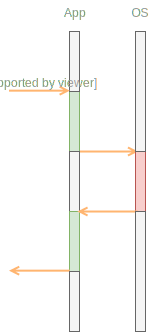
Изначально I/O-операции были блокирующими
Управление передаётся ОС и возвращается приложению только после того, как ОС закончит чтение или запись данных
Один поток, несколько пользователей
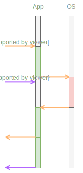
Блокирующее I/O нерационально расходует ресурс CPU
Ресурс CPU – очень дорогой
Чтение 1 Кб данных c SSD – 28 000 циклов на одном 2Ghz ядре
1 cетевое соединение – 132 000 000 циклов на одном 2Ghz ядре
C ростом числа одновременных пользователей блокирующее I/O тормозит обработку новых запросов
Multithreading
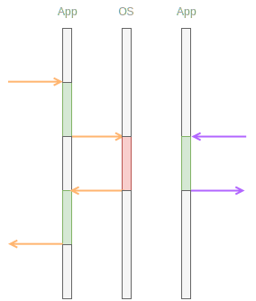
Multithreading
- Поднятие потока – дорогая операция, но обычно используется пулл уже поднятых
- Ограничение на количество
- Каждый поток – дополнительная память
Non-blocking I/O
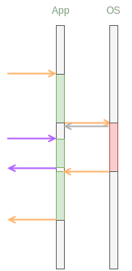
При использовании интерфейса не блокирующего I/O, ОС сразу возвращает управлению приложению
Как только ресурс будет прочитан или записан, ОС уведомит об этом приложение
Один из популярных подходов в работе с non-blocking I/O – паттерн Reactor для однопоточных приложений
Включает в себя использование другого паттерна – Callback
Синхронное выполнение операции
try {
const data = readFileSync('data.json');
console.log(data);
} catch(err) {
console.error(err);
}
Асинхронное выполнение операции
readFileAsync('data.json', (err, data) => {
if (err) {
console.error(err);
}
console.log(data);
});
callback всегда идёт последним аргументом асинхронной функции
Ошибка приходит в callback первым аргументом

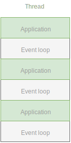
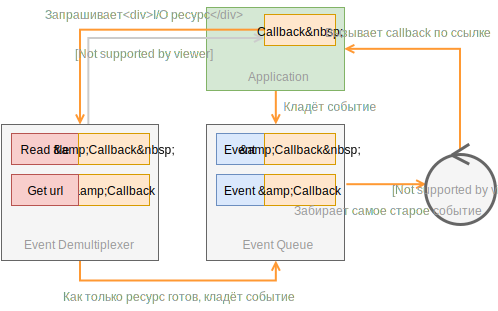
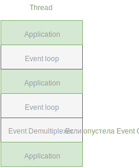
Nginx использует паттерн Reactor
Apache vs Nginx
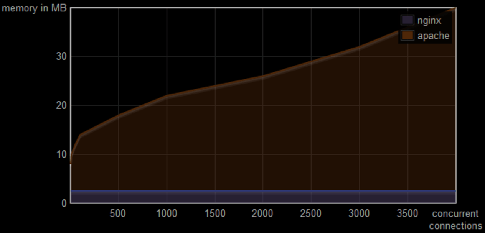Apache vs Nginx
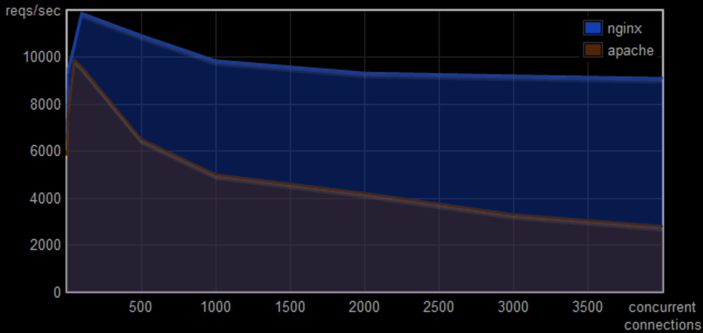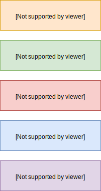
Node.js последовательно проходит фазы в каждом цикле
К каждой фазе привязана отдельная очередь событий
Timers – фаза, в которой последовательно вызываются обработчики истёкших таймеров
setTimeout(handler, 2000);
setInterval(handler, 2000);
I/O Callback – фаза, в которой последовательно вызываются обработчики выполненных асинхронных операций
fs.readFile(path, handler);
I/O polling – фаза, в которой происходит ожидание завершения I/O операций
Event Demultiplexer
I/O polling происходит, если
нет событий в других очередях
Время допустимое для I/O polling расчитывается
как время до ближайшего таймера
Immediates – фаза, в которой последовательно вызываются обработчики созданные setImmediate
setImmediate(handler);
Close callbacks – фаза, в которой последовательно вызываются обработчики связанные c закрытием I/O процесса
socket.on('close', handler)
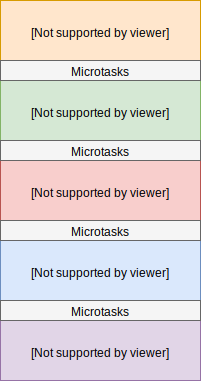
Очередь микрозадач разбирается между каждой фазой пока не опустеет
В ходе разбора очереди микрозадач, она может полнять себя бесконечно
Цель микрозадач – уменьшать задержку между исполняемыми участками кода
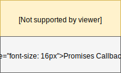
process.nextTick(handler)
Promise.resolve(handler)
В 2009 Ryan Dahl cоздаёт Node.js
В разных операционных системах Event notification interface реализован по разному
I/O Completion Port API в windows,
epoll в linux, kqueue в osx
Библиотека libuv скрывает разную реализацию за единым интерфейсом
libuv так же включает в себя реализацию Event Demultiplexer, Event Queue и Event Loop
Особенности libuv
- В linux операции над локальными файлами всегда блокирующие (в отличие от сетевых операций)
- Для эмуляции неблокирующего поведения libuv использует потоки
- По умолчанию создаётся пулл 4 потоков
Почитать про libuv
About libuv
Bert Belder
Design overview
docs.libuv.org
Basics of libuv
docs.libuv.org
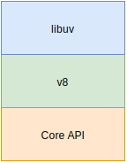
JavaScript и v8
- Функции первого класса и замыкания
- Готов к EventLoop (DOM events, setTimeout)
- Отсутствие багажа в виде синхронных библиотек (как у Lua, например)
- Быстрый интерпретатор v8
Core API
API для работы с файловой системой, для общения по http, логирования и другие
Почитать про Node.js
Original Node.js presentation
Ryan Dahl
Event Loop and the Big Picture
Deepal Jayasekara
How does NodeJS work
Eugene Obrezkov
Node.js Design Patterns
Mario Casciaro, Luciano Mammino
Getting started
Для установки Node.js рекомендуется использовать Node Version Manager
Позволяет одновременно установить несколько разных версий Node.js
Node Version Manager
$ nvm install 9
Downloading and installing node v9.2.0...
Downloading https://nodejs.org/dist/v9.2.0/node-v9.2.0-darwin-x64.tar.xz...
######################################################################## 100.0%
Computing checksum with sha256sum
Checksums matched!
$ nvm use 9
Now using node v9.2.0 (npm v5.5.1)
$ nvm ls
v8.9.1
-> v9.2.0
Node
$ node -v
v9.2.0
$ node -h
Usage: node [options] [ -e script | script.js | - ] [arguments]
node inspect script.js [arguments]
Options:
-v, --version print Node.js version
$ node -p '2 + 2'
4
Node
$ node --v8-options
Options:
--use_strict (enforce strict mode)
type: bool default: false
--harmony (enable all completed harmony features)
type: bool default: false
$ node --use-strict --max-old-space-size=4096 index.js
REPL
$ node
> 2 + 2
4
> .help
.break Sometimes you get stuck, this gets you out
.clear Alias for .break
.editor Enter editor mode
.exit Exit the repl
.help Print this help message
.load Load JS from a file into the REPL session
.save Save all evaluated commands to a file
REPL
$ node
> .editor
// Entering editor mode (^D to finish, ^C to cancel)
let a = 2;
a * 2;
4
>
Модули
Чтобы упростить разработку и тестирование приложения – код разделяют на небольшие изолированные модули
Модуль для платформы Node.js – отдельный файл с кодом на JavaScript
Node.js добавляет возможность экпортировать функциональность из одного модуля и импортировать её в другом
Возможности импорта и экспорта описаны спецификацией Modules/1.1.1
Спецификация разрабатывается группой CommonJS, которая пытается стандартизировать различные API
Модуль
// file: index.js
function sum(nums) {
return nums.reduce((acc, num) => acc + num);
}
function average(...nums) {
return sum(nums) / nums.length;
}
average(1, 2, 3); // 2
Экспорт из модуля
// file: average.js
function sum(nums) {
return nums.reduce((acc, num) => acc + num);
}
module.exports = function average(...nums) {
return sum(nums) / nums.length;
}
Node.js для каждого модуля делает доступным объект module, который описывает модуль
Из модуля экпортируется значение помещённое в поле module.exports
Это может быть функция, конструктор, объект, число, «класс» – что угодно
По умолчанию exports хранит пустой объект
Импорт модуля
// file: index.js
const average = require('./average');
average(1, 2, 3); // 2
Node.js содержит встроенные модули
Например, fs для работы с файлами
или util со вспомогательными утилитами
Мы можем их импортировать в свои модули
Импорт встроенного модуля
// file: index.js
const { format } = require('util');
const average = require('./average');
format('Average is %d', average(1, 2, 3)); // Average is 2
Node.js поддерживает импорт из файлов разных типов – json, js, mjs.
Импорт JSON
// file: data.json
{
"year": 1703
}
// file: index.js
const data = require('./data.json');
console.log(data); // { year: 1703 }
Существенная часть кода Node.js
написана на JavaScript
Код модульной системы описан в файле /lib/module.js на GitHub
Модули изнутри
function require(path) {
return Module._load(path);
}
function Module() {
this.exports = {};
this.filename = null;
}
Модули изнутри
Module._load = function(path) {
var filename = Module._resolveFilename(path);
var module = new Module();
module.load(filename);
return module.exports;
}
Module._resolveFilename = function(path) {
// ./average -> /Users/gogoleff/lecture/average.js
}
Модули изнутри
const path = require('path');
Module.prototype.load = function(filename) {
this.filename = filename;
var extension = path.extname(filename) || '.js';
Module._extensions[extension](this, filename);
};
Module._extensions['.js'] = function (module, filename) {};
Module._extensions['.mjs'] = function (module, filename) {};
Module._extensions['.json'] = function (module, filename) {};
Модули изнутри
const fs = require('fs');
Module._extensions['.json'] = function(module, filename) {
var content = fs.readFileSync(filename, 'utf8');
module.exports = JSON.parse(content);
};
Модули изнутри
const json = require('./data.json');
function require(path) {
return Module._load(path);
}
Module._load = function(path) {
// ... получаем полный путь до файла
module.load(filename);
return module.exports;
}
Module.prototype.load = function(filename) {
// ... узнаём расширение файла
Module._extensions[extension](this, filename);
};
Module._extensions['.json'] = function(module, filename) {
var content = fs.readFileSync(filename, 'utf8');
module.exports = JSON.parse(content);
};
Модули изнутри
Module._extensions['.js'] = function(module, filename) {
var content = fs.readFileSync(filename, 'utf8');
module._compile(content, filename);
};
Модули изнутри
const vm = require('vm'); // Для интерпретации кода в v8
Module.prototype._compile = function(content, filename) {
var wrapper = Module.wrap(content);
// (function (exports, require, module, __filename, __dirname) {',
// module.exports.average = function () {}
// });
var compiledWrapper = vm.runInThisContext(wrapper); // Похоже на eval
var dirname = path.dirname(filename);
compiledWrapper.call(
this.exports, // -> this – ссылка на module.exports
this.exports, // -> exports – ссылка на module.exports
require, // -> require
this, // -> module
filename, // -> __filename – файл модуля
dirname // -> __dirname – директория модуля
);
};
Модуль
// file: index.js
console.log(module.filename);
// /Users/gogoleff/lecture/index.js
console.log(__filename);
// /Users/gogoleff/lecture/index.js
console.log(this === module.exports);
// true
console.log(exports === module.exports);
// true
Экпорт из модуля
// file: average.js
function sum(nums) {}
module.exports.average = function(...nums) {}
// Можно так
exports.average = function(...nums) {}
// Или так
this.average = function(...nums) {}
// Но не так!
exports = function(...nums) {}
Кеширование импорта
// file: counter.js
let counter = 1;
module.exports = () => counter++;
// file: index.js
var counter = require('./counter');
var anotherCounter = require('./counter'); Возьмёт из кеша
console.log(counter()); // 1
console.log(counter()); // 2
console.log(anotherCounter()); // 3
Модули изнутри
Module._cache = Object.create(null);
Module._load = function(path) {
var filename = Module._resolveFilename(path);
if (Module._cache[filename])
return Module._cache[filename].exports;
var module = new Module();
Module._cache[filename] = module;
module.load(filename);
return module.exports;
}
Модули импортируются один раз и затем кешируются по абсолютному пути до файла
Кэш можно посмотреть в поле require.cache
Кеширование импорта
// file: index.js
const average = require('./average');
console.log(require.cache);
// {
// '/Users/gogoleff/lecture/average.js': Module {
// exports: { average: [Function: average] },
// filename: '/Users/gogoleff/Downloads/average.js'
// }
// А так можно очистить кеш
delete require.cache[path.resolve('./average.js')];
Модуль, c которого начинается интерпретация, называется главным
Ссылка на него хранится в поле require.main
Главный модуль
// file: average.js
const isMain = require.main === module; // false
// file: index.js
const average = require('./average');
const isMain = require.main === module; // true
$ node index.js
CLI
Параметры командной строки
$ node index.js --name=sergey
console.log(process.argv);
// [ '/Users/gogoleff/.nvm/versions/node/v9.2.0/bin/node',
// '/Users/gogoleff/lecture/index.js',
// '--name=sergey' ]
Параметры командной строки
const { argv } = process;
const nameArg = argv.find(arg => arg.startsWith('--name='));
const [key, value] = nameArg.slice(2).split('=');
console.log(`Hello, ${value}`);
$ node index.js --name=Sergey
Hello, Sergey
Переменные окружения
$ node NODE_ENV=production index.js
console.log(process.env.NODE_ENV);
// production
console.log(process.env);
// {
// ...
// USER: 'gogoleff',
// NODE_ENV: 'production'
// ...
// }
Переменные окружения
const { argv, env } = process;
const nameArg = argv.find(arg => arg.startsWith('--name=')) || '';
const [key, value] = nameArg.slice(2).split('=');
console.log(`Hello, ${value || env.USER}`);
$ node index.js
Hello, gogoleff
Окружение хранит множество настроек (переменных) в виде пар «ключ=значение»
При создании процесса, он получает локальную копию окружения
В windows ключи переменных окружения регистронезависимы!
Переменные окружения
$ node NODE_ENV=production index.js
// file: module.js
process.env.NODE_ENV = 'development';
// file: index.js
require('./module');
console.log(process.env.NODE_ENV);
// development
NODE_ENV используется многими библиотеками, чтобы определить окружение, где запускается приложение
Например, если React видит в этой переменной значение production, то он делает дополнительные оптимизации
Node.js использует путь указанный в NODE_PATH для поиска модулей
NODE_PATH
// Без указания NODE_PATH
require('/home/gogoleff/common/module.js');
$ node NODE_PATH=/home/gogoleff/common/ index.js
// С указанием NODE_PATH
require('module.js');
Увеличить количество потоков для работы с локальными файлами можно в переменной UV_THREADPOOL_SIZE
Пользовательский ввод
const { createInterface } = require('readline');
const session = createInterface({
input: process.stdin,
output: process.stdout
});
session.question('What is your name?', name => {
rl.write(`Hello, ${name}`);
session.close();
});
$ node index.js
What is your name? Sergey
Hello, Sergey
Стандартные потоки ввода/вывода
// Эквивалентно console.error
process.stderr.write('Some error');
// Эквивалентно console.log
process.stdout.write('Information message');
$ node index.js 2>stderr.log 1>stdout.log
$ cat stderr.log
Some error
$ cat stdout.log
Information message
Стандартные потоки ввода/вывода
process.stdin.setEncoding('utf8');
process.stdin.on('readable', () => {
const input = process.stdin.read();
if (input) {
process.stdout.write(input);
}
});
$ echo 'User input' | node index.js
User input
Выход из приложения
process.exit(1); // 0 по умолчанию
process.exit убивает процесс максимально быстро, не дожидаясь заверешения асинхронных операций!
Веб-приложение
Модуль events
const EventEmitter = require('events');
const emitter = new EventEmitter();
emitter.on('log', console.info);
emitter.emit('log', 'Hello!'); // Hello!
emitter.emit('unknown event'); // Do nothing
emitter.emit('error');
// Uncaught, unspecified "error" event.
Всегда привязывайте обработчик к событию error
Если к событию привязано более 10 обработчиков, Node.js заподозрит неладное
Возможно мы лишний раз привязываем один и тот же обработчик или не отвязываем, вызывая утечку памяти
Можно успокоить Node.js увеличив значение emitter.setMaxListeners(42)
http-сервер
const http = require('http');
const server = new http.Server();
server.on('request', (req, res) => {
res.end('Hello, Anonymous!');
});
server.listen(8080);
http-сервер
const http = require('http');
const { parse: parseUrl } = require('url');
const { parse: parseQuery } = require('querystring');
const server = new http.Server();
server.on('request', (req, res) => {
const { query } = parseUrl(req.url); // name=Sergey
const { name } = parseQuery(query); // Sergey
res.end(`Hello, ${name}!`);
});
server.listen(8080);
Объект req
server.on('request', (req, res) => {
console.info(req.url); // /?name=Sergey
console.info(req.method); // GET
console.info(req.headers); // { 'accept-encoding': 'gzip' }
});
Объект res
server.on('request', (req, res) => {
res.setHeader('content-type', 'text/html');
res.write('Hello,');
res.write('Anonymous');
res.end('!')
});
Модуль url
url.parse('https://yandex.ru/');
// {
// protocol: 'https:',
// host: 'yandex.ru',
// path: '/',
// ...
// }
url.format({
protocol: 'https:',
host: 'yandex.ru'
});
// https://yandex.ru/
Модуль querystring
querystring.parse('foo=bar&arr=a&arr=b');
// {
// foo: 'bar',
// arr: ['a', 'b']
// }
querystring.stringify({
foo: 'bar',
arr: ['a', 'b']
});
// foo=bar&arr=a&arr=b
http-клиент
const http = require('http');
const req = http.request({
hostname: 'localhost',
port: 8080
});
http-клиент
req.on('response', response => {
let body = '';
response.on('data', chunk => {
body += chunk; // res.write();
});
response.on('end', () => {
console.info(body); // res.end();
});
});
Почитать про модули
Node.js Guides
nodejs.org
Node.js API docs
nodejs.org
16. Modules
Exploring.js
npm
Прежде чем написать свой модуль, рассмотрите уже существующие
Для того чтобы поделиться своим модулем, из него необходимо сделать пакет
Пакет – это модуль плюс файл-манифест
Создание файла манифеста
$ npm init
package name: (average)
version: (1.0.0)
description: Calculate average number
author: Sergey Gogolev
license: (ISC) MIT
About to write to /Users/gogoleff/lecture/average/package.json
{
"name": "average",
"version": "1.0.0",
"description": "Calculate average number",
"author": "Sergey Gogolev",
"license": "MIT"
}
package.json
{
"name": "average",
"version": "1.0.0",
"description": "Calculate average number",
"author": "Sergey Gogolev",
"license": "MIT"
}
Установка зависимостей
$ npm install lodash
npm notice created a lockfile as package-lock.json. You should commit this file.
+ lodash@4.17.4
added 1 package from 2 contributors and audited 1 package in 1.24s
const { sum } = require('lodash');
exports.average = (...nums) => sum(nums) / nums.length;
Зависимости устанавливаются в директорию node_modules
Функция require ищет в ней модули,
если не находит встроенного
Зависимости фиксируются в package.json
package.json
{
"name": "average",
"version": "1.0.0",
"description": "Calculate average number",
"author": "Sergey Gogolev",
"license": "MIT",
"dependecies": {
"lodash": "4.17.4"
}
}
Пакеты публикуются в реестр npmjs.com
Необходимый пакет можно поискать там или в более удобном сервисе npms.io
package-lock.json
$ cat package-lock.json
"name": "average",
"version": "1.0.0",
"lockfileVersion": 1,
"requires": true,
"dependencies": {
"lodash": {
"version": "4.17.4",
"resolved": "https://registry.npmjs.org/lodash/-/lodash-4.17.4.tgz",
"integrity": "sha1-eCA6TRwyiuHYbcpkYONptX9AVa4="
}
}
Если есть файл package-lock.json, npm установит зависимости согласно ему
Если нет, npm установит зависимости согласно package.json и сгенерирует на его основе package-lock.json
package-lock.json гарантирует, что у всех разработчиков и на всех серверах будет установлен идентичный набор пакетов